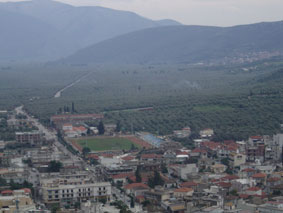

Οικονομία
 Στην ¶μφισσα αναπτύσσονται όλες οι οικονομικές δραστηριότητες μιας σύγχρονης αστικής πόλης. Ωστόσο η παραδοσιακή καλλιέργεια της βρώσιμης ελιάς Αμφίσσης, γνωστής για το μέγεθος και τη γεύση της, εξακολουθεί να αποτελεί πηγή εισοδήματος των κατοίκων της περιοχής. Διατηρούνται επίσης βιοτεχνίες που ανθούσαν κατά το παρελθόν: βυρσοδεψεία στην παραδοσιακή συνοικία Χάρμαινα, κουδουνάδικα και σχοινάδικα. | ||